— История создания —
Докатились и до нашего региона платные парковки. Не хочу высказываться по этому поводу, но учитывая среднюю зарплату по региону в 20 тысяч рублей, платить за неё минимум 3,5 тысячи в месяц — это совсем беда. И деваться некуда, из области я, от машины не откажешься, ибо другого транспорта там где я живу попросту нет. Ну да ладно, лирика это всё.
Ко мне обратился клиент, некомерческая организация, с просьбой создать приложение для iPhone, а в перспективе и Android платформы, которое поможет автомобилистам ориентироваться на дорогах нашего города и области. Необходимость в этом возикла из- за принятия ряда новых положений о безопасности на дорогах и введение платных парковочных зон. На основании этих требований, с руководителем организации, назначеным ответственным лицом, был составлен бриф.
— Концепция и брифинг —
Идея проекта: приложение для автомобилистов, в котором отображается информация о ключевых точках на дорогах города, таких как: камеры фиксации скорости, платные парковки, пробки и заторы и одностороннее движение. Также должна присутствовать функция предварительного оповещения автолюбителя о подъезде к вышеуказанным точкам.
Задачи продукта: создания централизованного источника информации для автовладельцев с удобным доступом, своевременными уведомлениями и приятным визуальным оформлением.
Целевая аудитория: молодые водители с гаджетами, экономные водители, люди, которые проводят за рулем значительную часть своего времени.
Конкуренты: действующих — нет. Есть приложение в разработке у конкурентов со схожим функционалом.
Ограничения по выходу в свет: выйти до Нового года.
Монетизация: прибыль от показа рекламы внутри приложения, продажа расширенной платной версии.
Критерий успешности проекта: Положительное впечатление пользователей, самоокупаемость проекта.
— Анкетирование и анализ —
Среди автомобилистов города было проведено анкетирование, путем раздачи соответствующих листовок на автозаправках города. Из полутора тысяч розданых анкет, отзыв был получен от более чем трехсот автолюбителей.
На основании полученой информации, после анализа, было сделано сегментирование, которое выявило наиболее точную целевую аудиторию приложения. Ею оказались молодые водители, которые используют мобильные гаджеты, желают знать, как лучше передвигаться по городу, где не стоит парковать машину, а где лихачить. Также в ЦА попали автомобилисты, часто передвигающиеся по городу, таксисты, водители службы доставки.
Были также рассмотрены пожелания пользователей к приложению, выявлены цели. Вот основные из них:
— Цели и критерии —
Основная цель пользователя, быть всегда заранее в курсе «попадания» на лишнюю оплату за парковку и проезд на камеру.
Снижение затрат и конфликтов с ГИБДД станет фактором понимания человеком пользы приложения.
Критерии оценки успеха — экономия средств. В отсутствие сервиса, используются навигаторы, антирадары.
Пользователь готов платить за своевременное оповещение о въезде в зону платной парковки и под камеру наблюдения, а также дорогу с односторонним движением.
— Пожелания пользователей —
мобильное
регулярно дополняемое и обновляемое
удобно пользоваться в авто (1 рука)
содержит информацию о всех платных улугах для автомобилистов
своевременные оповещения о пердполагаемых проблемах на дороге(пробки, камеры, одностороннее движение, паркоматы)
По результатам анкетирования, после составления карты эмпатии были выявлены основные ключевые персонажи:
— Ключевые персонажи —
ФИО, возраст, статус, образование: Иванов Алексей Петрович, 30 лет, житель города, невысокого/ среднего достатка, среднее образование. Менеджер по продажам.
Ключевые цели: прожить на зарплату, заработать на квартиру, поменять машину. В контексте приложения — видеть актуальную информацию, своевременно реагировать на въезд в платную зону.
Мотивация: необходимость экономить, нежелание платить лишнее.
Негатив: Нет приложений, говорящих об «опасностях» заранее. При плохом качестве приложения — будет искать другой способ получения информации. Технологичность продукта значения не имеет.
Увлечения: курение, любит скорость. Увлекается авто.
Интернет-активность: активный пользователь вКонтакте, в других сетях не состоит. Посещает drom.ru и auto.ru. Пользуется смартфоном с iOS, на котором использует 2gis, Яндекс.Карты, Skype.
Использует автомобиль: иностранного производства, год выпуска 2008. Одно авто в семье. Стаж вождения 3 года.
ФИО, возраст, статус, образование:Дмитриев Андрей Семенович, 42 года, житель города, среднего достатка, техническое образование. Водитель.
Ключевые цели: содержать семью, сделать ремонт, поменять машину. В контексте приложения — исключить возможность быть оштрафованым за нарушение ПДД.
Мотивация: выговор от начальства за штрафы, уменьшение дохода, в случае получения штрафа.
Негатив: Сложность в использовании гаджета за рулем. При плохом качестве приложения — откажется от использования гаджета, будет ездить «по старинке». Технологичность продукта значения не имеет.
Увлечения: курение, алкоголь. Охота, рыбалка.
Интернет-активность: посещает Одноклассники. Посещает auto.ru и avito.ru. Пользуется смартфоном с Android, на котором использует 2gis, Яндекс.Карты. Использует навигатор.
Использует автомобиль: категории С, либо грузоподъемное В категории. Два авто в семье. Стаж вождения 15 лет.
— Контекстные сценарии —
Для более точного понимания пользовательского взаимодействия с приложением были созданы несколько вариантов сценариев:
Пользователь имеет намерение провести в машине длительное время. Он садится в авто, завтодит его, попутно запуская приложение на смартфоне. Перед поездкой, он должен включить, либо отключить уведомления о конкретных объектах на карте, либо сразу поехать по своим делам. Пользователь выбирает несколько пунктов в настройках, кладет смартфон в удобное место и начинает движение в пункт назначения.
Пользователь садится в автомобиль и сразу трогается к месту назначения, забывая запустить приложение, о чем получает своевременное уведомление. Он достает из кармана смартфон и пытается сделать это на ходу.
— Карта пользовательских путешествий и mindmap —
На основании анализа ключевых персонажей была создана карта пользовательских путешествий:
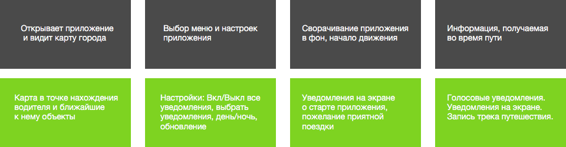Проанализировав данные, полученные в результате исследования конкурентов, а также матрицу идей, была создана mindmap (серыми стрелками показано взаимодействие):
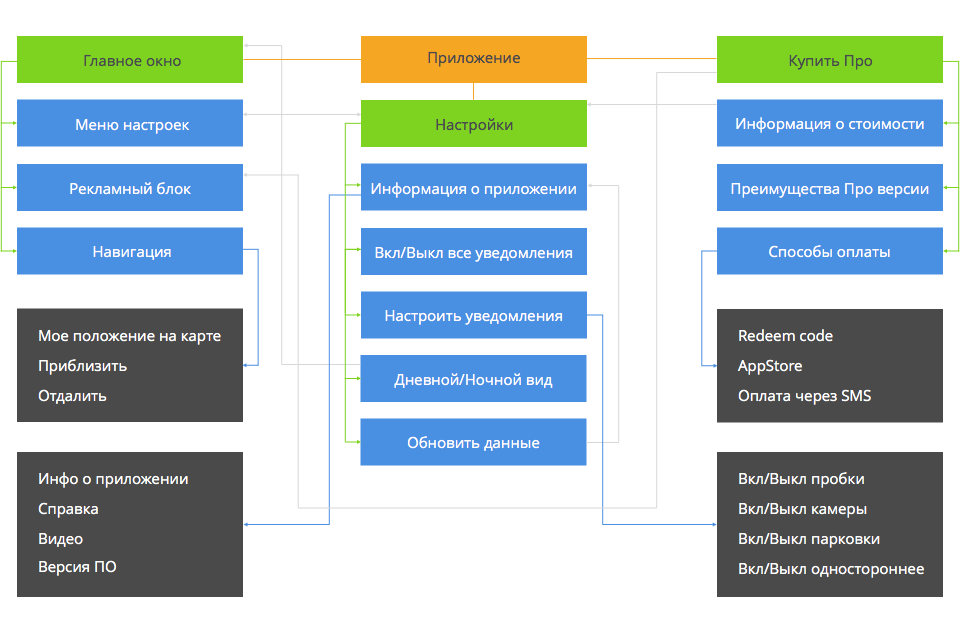— Wireframes —
После всех манипуляций с данными была осуществлена разработка прототипа интерфейса приложения в Axure:
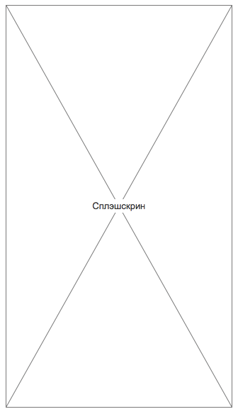
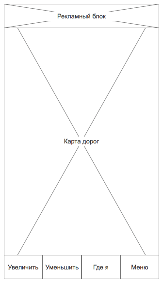
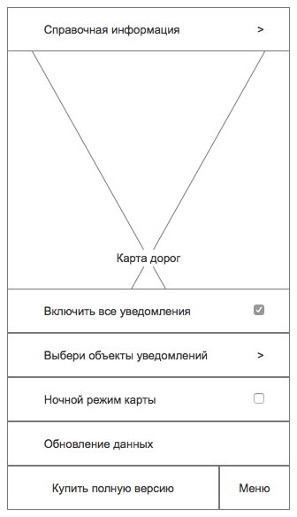
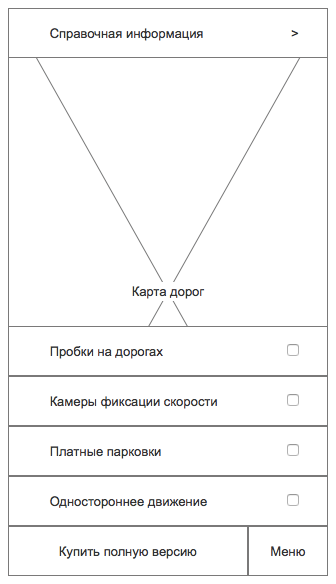
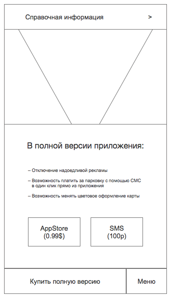
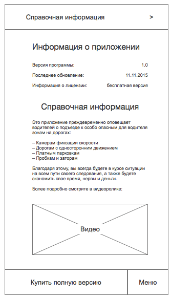
Ну и напоследок, процесс создания интерфейса приложения в Sketch:
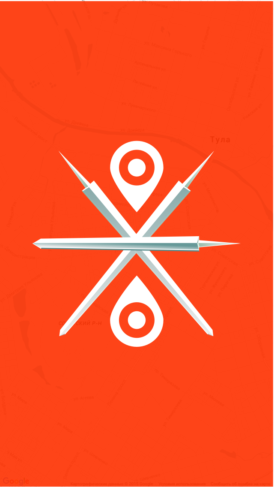
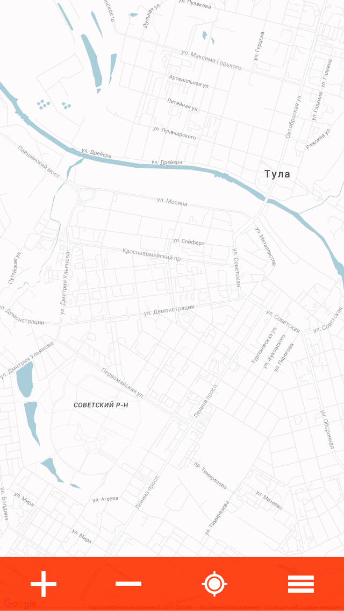
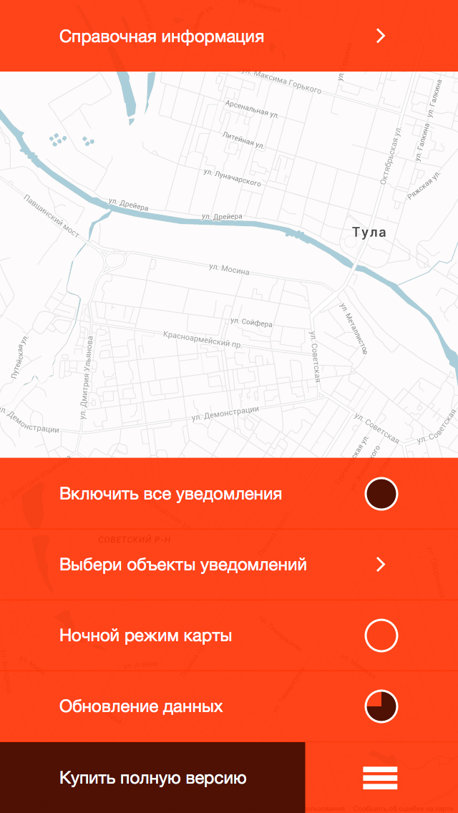
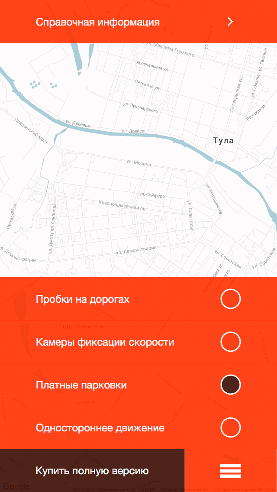
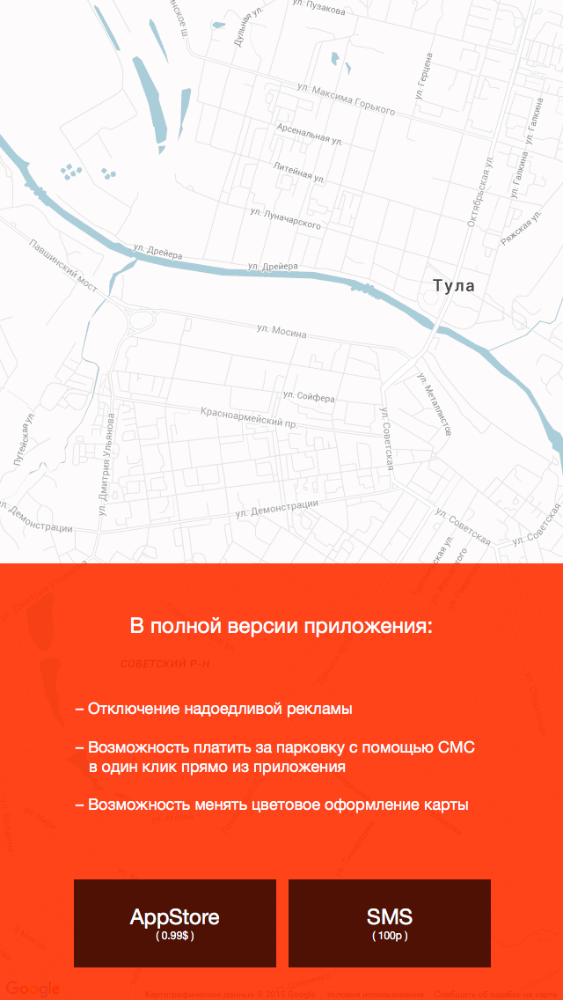
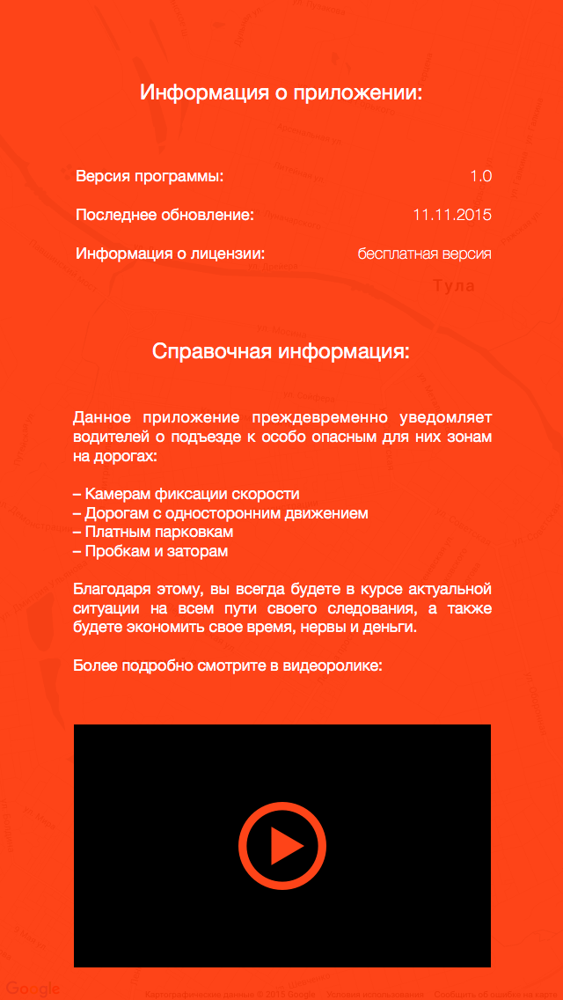
На этом всё. Спасибо за то, что прочитали статью. Хочу добавить, что я описываю не все этапы исследований и привожу здесь не полную информацию, а лишь её краткую выжимку. Полные материалы занимают, порой, много-много листов формата А4.
Если вы хотите связаться со мной, либо у вас есть заказ для меня — прошу перейти по ссылкам в футере и оставить мне сообщение. Всего вам хорошего.